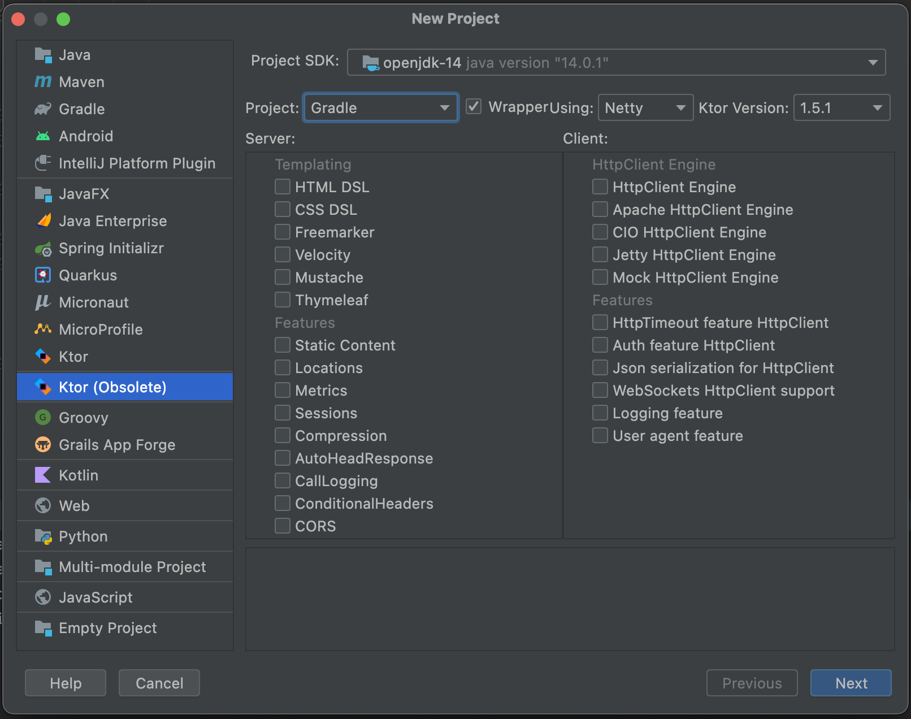

<!DOCTYPE html>
<html lang="en">
<head>
  <meta charset="UTF-8">
  <title>Title</title>
  <script src="../glitterBundle/ControlInstance.js"></script>
  <link href="../glitterBundle/bootstrap.css" rel="stylesheet">
  <link href="../fontawesome-free-5.15.4-web/css/all.min.css" rel="stylesheet">
  <script src="https://cdn.jsdelivr.net/npm/marked/marked.min.js"></script>

  <link rel="stylesheet" href="https://cdnjs.cloudflare.com/ajax/libs/highlight.js/10.7.1/styles/xcode.min.css">
  <script src="https://cdnjs.cloudflare.com/ajax/libs/highlight.js/10.7.1/highlight.min.js"></script>
  <!-- and it's easy to individually load additional languages -->
  <script src="https://cdnjs.cloudflare.com/ajax/libs/highlight.js/10.7.1/languages/go.min.js"></script>
  <link href="../css/article.css" rel="stylesheet">
</head>
<style>

  .js{
    text-align: left;
  }
</style>
<body>
<script>
  lifeCycle.onCreate=function (){
    hljs.highlightAll();
  }
  lifeCycle.onCreateView=function (){
    return `
        <h3 style="font-size: 39px;font-weight: 400;">後端配置</h3>
    <div style="height: 1px;width: 100%;background-color: whitesmoke;margin-top: 20px;margin-bottom: 20px;"></div>

    <a onclick="glitter.openNewTab('https://github.com/sam38124/Glitter_Web')" >Github resources</a>
 <div style="height: 1px;width: 100%;background-color: whitesmoke;margin-top: 20px;margin-bottom: 20px;"></div>
 <h4 style="color: darkslategray">Glitter後端應用是基於Ktor平台上所架設，你可以同時使用Java和Kotlin兩種程式語言進行後端Restful API開發，並且編譯出JAR檔案
 運行於伺服器環境當中．</h4>
 <div style="height: 1px;width: 100%;background-color: whitesmoke;margin-top: 20px;margin-bottom: 20px;"></div>
 <span>Step1. 創建Ktor應用專案.</span> <br> <br>
 
<div style="height: 1px;width: 100%;background-color: whitesmoke;margin-top: 20px;margin-bottom: 20px;"></div>
    <br>
 <span>Step2. 下載最新版本JAR套件.</span>
   <br>  <br>
${glitter.share.code.div(`<a style="color: dodgerblue;" href="../background/versionlist/GlitterFrameWork-jvm-2.30.jar" target="_blank">GlitterFrameWork-jvm-2.30.jar</a>
`)}
<div style="height: 1px;width: 100%;background-color: whitesmoke;margin-top: 20px;margin-bottom: 20px;"></div>
 <span>Step3. 創建lib資料夾複製jar進去後，在選擇Add as Library.</span> <br> <br>
 <div style="width: 100%;text-align: center;">
 </div>

<div style="height: 1px;width: 100%;background-color: whitesmoke;margin-top: 20px;margin-bottom: 20px;"></div>
    <br>

        <span>Step4. 於build.gradle中添加依賴．</span>
          <br>  <br>
        ${glitter.share.code.kotlin(` implementation files('lib/GlitterFrameWork-jvm-2.30.jar')
`)}
         <div style="height: 1px;width: 100%;background-color: whitesmoke;margin-top: 20px;margin-bottom: 20px;"></div>
 <span>Step5. 設定你的port路徑，如果有申請SSL金鑰的話，也可以同步進行設定.</span> <br> <br>
 
  <br> <br>
  <span>Step6. 最後於Application中設定你的Glitter路徑即完成配置，點擊三角形運行專案檢視成果．</span> <br> <br>
 ${glitter.share.code.kotlin(`@Suppress("unused") // Referenced in application.conf
@kotlin.jvm.JvmOverloads
fun Application.module(testing: Boolean = false) {
    routing {
        /**
        * 設定網址名稱要對應到的Glitter Project路徑
        * 下方範例對應的網址路徑為->http://127.0.0.1/Petstagrm/home.html
        * */
        val glitterProject:MutableMap<String, String> = mutableMapOf()
        glitterProject["Petstagrm"]="/Users/jianzhi.wang/Desktop/square_studio/Petagrem"
        Glitter.setUp(this, {},glitterProject)
    }
}
`)}

`
  }
</script>
</body>
</html>

